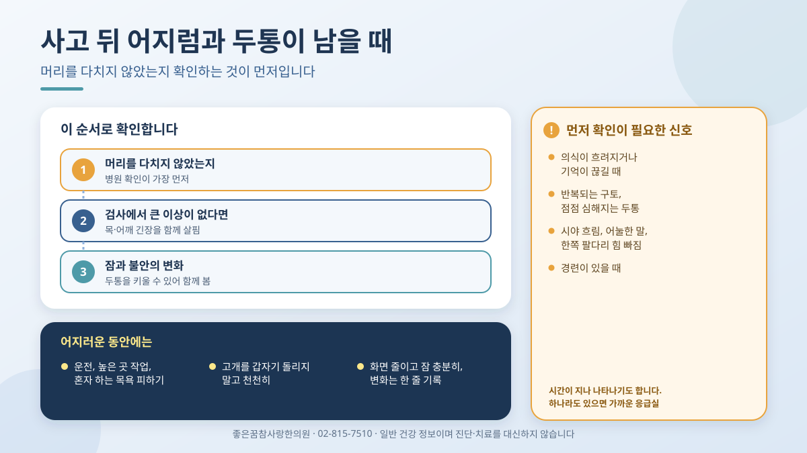

교통사고 뒤 어지럼과 두통은 의식 변화나 반복되는 구토, 시야 이상이 있으면 즉시 응급실에서 확인해야 하며 검사에서 큰 이상이 없는데 남는 목 긴장성 두통과 어지럼은 사고 일시와 증상이 나타나는 상황을 기준으로 살핍니다.
여쭙는 것
- 사고가 언제, 어떤 방향에서 났나요? 머리를 부딪혔나요?
- 병원에서 머리 검사를 받았나요? 결과는 어땠나요?
- 두통이 목과 어깨 긴장과 함께 오나요?
생활에서 해 볼 것
- 어지러울 때는 운전과 높은 곳 작업, 혼자 하는 목욕을 피하기
- 고개를 갑자기 돌리지 말고 천천히 움직이기
- 화면 보는 시간을 줄이고 잠을 충분히 자기
한의원에서 함께 살필 것
- 검사에서 큰 이상이 없는데 뒷목이 뻐근하고 머리가 무거운 경우 목과 어깨의 긴장을…
- 고개를 돌릴 때 어지러운 느낌이 있는 경우 목의 움직임과 자세를 살핍니다.
- 사고 뒤 잠이 얕아지고 긴장이 풀리지 않는 경우 잠과 생활 리듬을 함께 살핍니다.
먼저 확인이 필요한 신호
- 의식이 흐려지거나 기억이 끊긴 경우
- 반복되는 구토와 점점 심해지는 두통
- 시야가 흐려지거나 말이 어눌해지고 한쪽 팔다리에 힘이 빠지는 경우

사고 뒤 머리가 아프거나 어지러우면 먼저 머리를 다치지 않았는지 확인하는 것이 가장 중요합니다. 의식이 흐려지거나 구토가 반복되고 시야가 흐려지면 바로 응급실을 찾아야 합니다. 병원 검사에서 큰 이상이 없는데도 두통과 어지럼이 남는다면, 목과 어깨의 긴장이나 잠·불안의 변화를 함께 살펴볼 수 있습니다.
왜 이런 불편이 생길 수 있나요
- 충돌 순간 목이 앞뒤로 흔들리면 목과 어깨 근육이 긴장해 머리가 조이듯 아플 수 있습니다.
- 목의 긴장은 고개를 돌리거나 일어설 때 어지러운 느낌과 함께 오기도 합니다.
- 사고 뒤 긴장과 불안, 잠 부족이 두통을 더 키울 수 있습니다.
- 드물게 머리 안의 문제가 늦게 나타나는 경우도 있어, 증상이 점점 심해지면 다시 검사가 필요합니다.

자주 하는 오해
- 머리 검사에서 이상이 없으면 두통은 금방 사라진다고 여기기 쉽지만, 목과 어깨 긴장, 잠 부족, 불안 때문에 한동안 이어지는 경우가 있습니다.
- 어지러우면 누워만 있어야 한다고 생각하기 쉽지만, 안전한 범위에서 천천히 움직이며 일상을 이어 가는 편이 나은 경우가 많습니다. 다만 운전과 높은 곳 작업은 피하세요.
- 두통약만 먹으면 된다고 여기기 쉽지만, 진통제를 너무 자주 먹으면 오히려 두통이 이어질 수 있어 복용 횟수를 함께 확인합니다.
- 사고 뒤 며칠 지나 생긴 두통은 상관없다고 생각하기 쉽지만, 점점 심해진다면 다시 검사가 필요할 수 있습니다.
예를 들면 이런 경우입니다
- 예를 들어 사고 뒤 오후만 되면 뒷목이 뻐근하고 머리가 조이는 직장인이라면, 화면 보는 시간과 목·어깨 긴장을 함께 살핍니다.
- 예를 들어 고개를 돌릴 때마다 잠깐씩 어지러운 분이라면, 어느 방향에서 어지러운지 확인하고 목의 움직임을 함께 봅니다.
- 예를 들어 사고 뒤 잠을 설치며 아침마다 머리가 무거운 분이라면, 잠과 긴장 상태를 함께 여쭙고 생활 리듬부터 정리합니다.
먼저 이렇게 여쭙니다
- 사고가 언제, 어떤 방향에서 났나요? 머리를 부딪혔나요?
- 병원에서 머리 검사를 받았나요? 결과는 어땠나요?
- 두통이 목과 어깨 긴장과 함께 오나요?
- 어지럼이 일어설 때, 고개를 돌릴 때, 누울 때 중 언제 오나요?
- 잠과 소화, 불안 같은 변화가 있나요?
- 진통제를 얼마나 자주 드시나요?
스스로 점검해 보세요
- 두통이 뒷목과 어깨 긴장과 함께 온다
- 고개를 돌리거나 일어설 때 어지럽다
- 사고 뒤 잠을 설치거나 악몽을 꾼다
- 화면을 오래 보면 두통이 심해진다
- 진통제를 일주일에 여러 번 먹는다
- 두통이나 어지럼이 날이 갈수록 심해진다
마지막 항목에 해당하거나 구토, 시야 흐림, 말이 어눌해지는 증상이 있다면 기다리지 말고 병원 검사를 먼저 받으세요.
일상에서 먼저 해 볼 수 있는 것
- 어지러울 때는 운전과 높은 곳 작업, 혼자 하는 목욕을 피하기
- 고개를 갑자기 돌리지 말고 천천히 움직이기
- 화면 보는 시간을 줄이고 잠을 충분히 자기
- 증상이 달라지면 날짜와 상황을 한 줄씩 기록하기
- 진통제 먹은 날과 횟수를 함께 적어 두기
한의원에서 함께 살필 수 있는 경우
- 검사에서 큰 이상이 없는데 뒷목이 뻐근하고 머리가 무거운 경우 목과 어깨의 긴장을 함께 살핍니다.
- 고개를 돌릴 때 어지러운 느낌이 있는 경우 목의 움직임과 자세를 살핍니다.
- 사고 뒤 잠이 얕아지고 긴장이 풀리지 않는 경우 잠과 생활 리듬을 함께 살핍니다.
좋은꿈참사랑한의원에서는 사고 경위와 병원 검사 결과를 먼저 확인하고, 진맥을 기본으로 하고 필요하다고 판단될 때 설진과 목·어깨의 움직임을 살핍니다. 그 뒤 상태에 맞춰 침·약침·추나·한약 상담 등을 정하며, 추나는 목의 상태를 확인한 뒤 신중하게 결정합니다. 보험 처리 여부와 범위는 접수 때 안내해 드립니다.
첫 방문에는 사고 경위와 머리 검사 결과를 먼저 확인하고, 두통과 어지럼이 언제, 어떤 동작에서 오는지 여쭙습니다. 목과 어깨를 직접 움직여 보며 긴장과 압통을 살피고, 진맥과 설진으로 잠과 긴장 상태를 함께 봅니다. 추나는 목의 상태를 확인한 뒤 신중하게 정하고, 다시 오시면 두통 기록부터 이어서 봅니다.

얼마나 지켜보고, 언제 상담하면 좋을까요
- 사고 뒤 처음 며칠은 두통과 어지럼의 시각, 정도를 하루 한 번 적어 두세요.
- 1~2주가 지나도 두통과 어지럼이 줄지 않거나 잠과 일상이 계속 흔들린다면 진료를 받아 보시길 권합니다.
- 의식이 흐려지거나 구토가 반복되고, 시야가 흐려지거나 한쪽 팔다리에 힘이 빠진다면 즉시 119나 응급실을 찾으세요.
이렇게 기록해 오시면 상담이 쉬워집니다
- 사고 일시와 충돌 방향, 머리를 부딪혔는지
- 병원 검사 종류와 결과, 진단서
- 두통·어지럼이 나타나는 시간과 상황
- 복용 중인 약
- 두통과 어지럼이 온 시각, 그때 하던 일
- 진통제를 먹은 날과 횟수

이런 증상은 먼저 확인이 필요합니다
- 의식이 흐려지거나 기억이 끊긴 경우
- 반복되는 구토와 점점 심해지는 두통
- 시야가 흐려지거나 말이 어눌해지고 한쪽 팔다리에 힘이 빠지는 경우
- 경련이 있는 경우
이런 증상은 사고 뒤 시간이 지나 나타나기도 하므로, 하나라도 있으면 바로 119나 응급실을 찾으세요. 복용 중인 약은 처방한 의사와 상의 없이 줄이거나 끊지 않습니다.
함께 읽으면 좋은 글
- 교통사고 뒤 목이 삔 것(경추 염좌)은 어떻게 살피나요?
- 교통사고 뒤 불안과 잠
- 교통사고 뒤 목과 허리가 아플 때
한눈에 보는 표
| 구분 | 핵심 |
|---|---|
| 여쭙는 것 | 사고가 언제, 어떤 방향에서 났나요? 머리를 부딪혔나요? 병원에서 머리 검사를 받았나요? 결과는 어땠나요? |
| 생활에서 해 볼 것 | 어지러울 때는 운전과 높은 곳 작업, 혼자 하는 목욕을 피하기 고개를 갑자기 돌리지 말고 천천히 움직이기 |
| 한의원에서 함께 살필 것 | 검사에서 큰 이상이 없는데 뒷목이 뻐근하고 머리가 무거운 경우 목과 어깨의 긴장을 함께 살핍니다. 고개를 돌릴 때 어지러운 느낌이 있는 경우 목의 움직임과 자세를 살핍니다. |
| 먼저 확인이 필요한 신호 | 의식이 흐려지거나 기억이 끊긴 경우 반복되는 구토와 점점 심해지는 두통 |
자주 묻는 질문
사고 뒤 어지럼은 한의원에서 바로 보나요?
의식 변화, 구토, 시야 이상 같은 증상이 있으면 병원에서 먼저 확인하세요. 검사 뒤 남는 불편을 함께 살핍니다.
병원 검사에서 이상이 없었는데 계속 어지러워요.
목의 긴장이나 잠 부족 등이 관련될 수 있어 증상이 나타나는 상황을 기록해 살핍니다. 점점 심해지면 다시 병원 검사를 받으세요.
처음 갈 때 무엇을 가져가나요?
병원 검사 결과와 진단서, 복용 약, 사고 일시 메모를 가져오세요.
어지러울 때 운전해도 되나요?
어지럼이 있는 동안은 운전과 높은 곳 작업을 피하시길 권합니다. 어지럼이 줄었는지 기록을 보며 진료 때 함께 확인합니다.
이 글은 일반적인 건강 정보이며 개인의 진단이나 치료를 대신하지 않습니다. 증상이 있거나 복용 중인 약이 있다면 진료를 통해 확인하세요. 치료 효과는 개인마다 다를 수 있습니다.
작성 기준: 일반적으로 알려져 있는 건강 정보를 참고해 정리했습니다(대표원장 감수). 증상 기록은 1~2주 동안 하루 1회, 비슷한 시간에 적어 오시면 지난 상태와 비교하기 쉽습니다.
좋은꿈참사랑한의원은 재진 때 지난번 이야기부터 이어서 여쭙니다. 진료시간과 예약은 오시는 길에서 확인하세요.
어디서 상담받을 수 있나요?
좋은꿈참사랑한의원은 서울 동작구 만양로2길 2 신성빌딩 3층·5층(서울 동작구 상도동, 7호선 상도역 3번 출구 근처)에 있습니다. 한의사 3명(이종호 대표원장, 조영기 수석진료원장, 정원영 진료원장)이 진료합니다. 진료시간은 평일 09:30~20:00(점심 13:00~14:00), 토·일·공휴일 09:30~15:00이며, 방문 전 전화로 확인을 권합니다. 예약은 네이버 예약, 카카오톡 상담, 전화 02-815-7510로 받습니다.